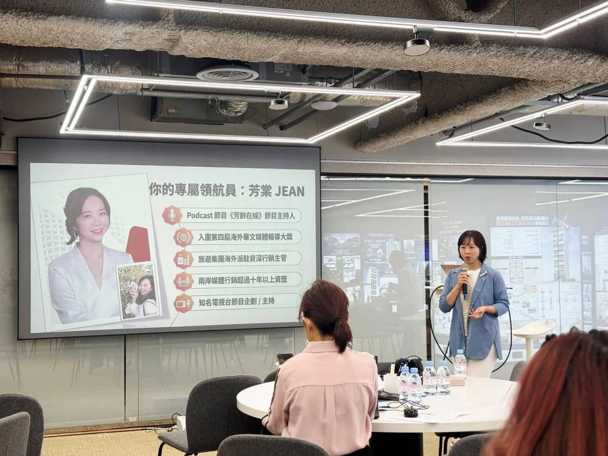
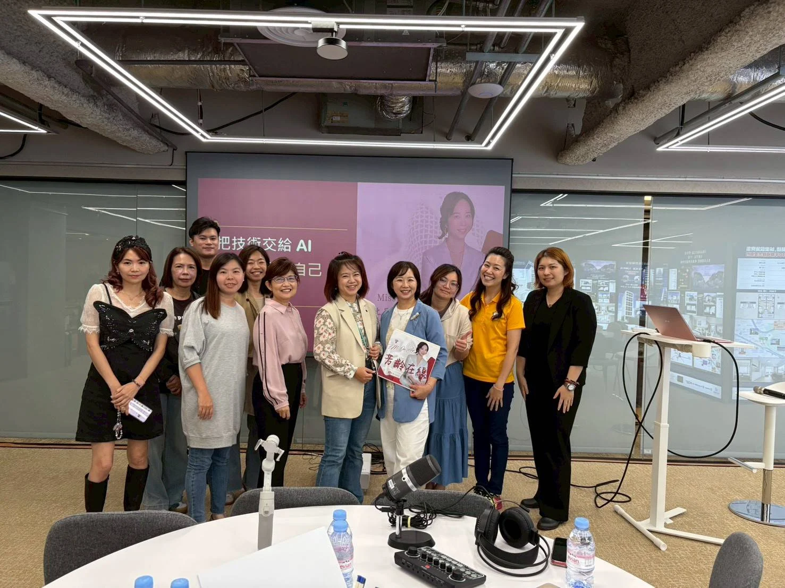

「我的經驗，有人想聽嗎？」
從熟悉的人生與專業出發，釐清想陪伴誰、想分享什麼。
AI × Podcast 聲音品牌實戰營
把走過的路，說成自己的節目。
讓 AI 協助整理想法，讓真實的妳走到麥克風前。
11/30 前早鳥 NT$7,980 ｜ 12/1 起 NT$9,800
A GENTLE PLACE TO BEGIN
不用一開始就很厲害。
我們把每個擔心，拆成能練習的一小步。
從熟悉的人生與專業出發，釐清想陪伴誰、想分享什麼。
沿著實際製作步驟認識工具，一次處理一件事，建立自己的流程。
先把想法整理成提綱，再用自己的語氣說出來，不必背完美的稿。
留下選題、腳本與宣傳模板，讓下一集有路可循。
ONLINE ANYTIME · 3 SATURDAYS
完成報名即可開啟線上課程。
再用三個週六，把學到的變成作品。
2026/12/05 — 12/19・共 8 小時
12/05（六）14:00–16:00
盤點妳的專業與人生故事，以 Podcast 戰略九宮格釐清目標聽眾、節目定位與第一集主題。
12/12（六）14:00–16:00
用 AI 整理素材、規劃提綱與口語腳本，再調整成妳習慣、自然的說話方式。
12/19（六）14:00–16:00
練習手機收音、聲音表達與基礎音檔整理，用 AI 輔助製作，保留妳真實的聲音。
12/19（六）16:00–18:00
練習節目介紹、單集摘要、平台上架流程與社群宣傳，思考如何讓內容成為個人品牌資產。
本梯最後一堂實體課為 12/19（六）18:00，12/20 起不再安排實體課。首集完成及上架時間依個人練習進度與平台審核而定。
YOUR STORY, WITH A LITTLE HELP
AI 幫忙整理，妳保留觀點與最後的判斷。
學會一套能帶回生活、繼續使用的製作流程。
主題與聽眾定位
妳的故事提綱、草稿與修改
AI 協作親自說出經驗觀點
妳的聲音音訊處理與文字摘要
AI 協作上架素材與社群宣傳
妳的確認工具仍需親自操作與校對。課程重視真實人聲，不是全自動生成節目的軟體。
REAL PEOPLE. REAL STORIES.
從教室裡的練習，到自己的節目。
這裡有真實的相遇，也有開始之後的回聲。


過往課程學員的原始 LINE 回饋・點圖可放大閱讀
Tisha・節目練習與同學回饋
學員・AI 企劃實作分享
Amy・錄音與節奏交流
Daniel・課堂觀點與合照分享
Filin・課後學習回饋
學員・課後操作回饋
同學・Podcast 視覺交流
學員・AI 工具實作討論
Tisha 與同學・創作交流
以上為過往課程原始紀錄與學員個人經驗，並非本梯成果承諾。實際學習成果依練習與投入情況而異。
MEET YOUR GUIDE
《芳齡在線》Podcast 主持人、MissBoss 創辦人。擁有二十餘年媒體、內容企劃與品牌行銷經驗，將人物採訪、節目製作與 AI 工具應用的實務方法帶進課堂。
從自己按下錄音，到累積 150+ 集節目，再把實際製作經驗整理成初學者能練習的路線：先釐清定位，再用 AI 整理內容，最後錄下自己的聲音。
「妳的經驗值得被珍惜，
也值得被聽見。」
IS THIS FOR YOU?
MAKE ROOM FOR YOUR FIRST EPISODE
線上課程報名即學，三個週六一起實作。
讓第一集，從腦中的想法走向作品。
實體課至 2026/12/19 18:00 結束，12/20 起不再安排本梯實體課。線上教材觀看期限、開通方式、請假補課與回放、作業回饋及退款取消條款，請於付款前向主辦單位確認。
查看本梯內容、時間與報名條款。
前往 PAYUNi，保留付款紀錄。
依主辦單位通知取得課程開通資訊。
帶著想法，在三個週六完成練習。
A FEW THINGS TO KNOW
把疑問說清楚，
才有安心開始的空間。
適合。線上課程讓妳先熟悉基本觀念，實體工作坊從節目定位、AI 腳本、錄音到上架準備逐步練習。妳需要願意親自操作、錄音與完成練習。
起步可以先使用手機與安靜的空間，不必急著購買專業麥克風。實際音質與設備、環境有關；第三方 AI、剪輯或上架工具如需訂閱，費用依各工具方案另計。
2026/12/05（六）14:00–16:00、12/12（六）14:00–16:00、12/19（六）14:00–18:00，合計 8 小時。12/19 為最後一場，12/20 起不再安排本梯實體課。地點以正式通知為準；請假、補課及回放方式請在報名前確認。
完成報名後即可開啟線上課程，不必等到實體課第一天。實際開通通知、教材觀看期限、社群及作業回饋權益，以正式報名資訊為準。
課程以完成首集作品與上架準備為學習目標，仍須配合錄製、修改與實作。實際上架時間依個人進度及發布平台審核而定，不保證播放量、收入或接案成果。
這堂課重視妳自己的故事、觀點與真實聲音。AI 用來輔助整理腳本、音訊與宣傳素材，仍須由妳操作、校對並完成最後確認。
2026/11/30（一）23:59 前享早鳥 NT$7,980；12/01 起正式售價 NT$9,800，12/04（五）23:59 截止報名。點選報名按鈕即可前往 PAYUNi，不需先預約諮詢；請以實際結帳畫面的金額為準。
請在付款前透過官方 LINE（@989pnlth）確認請假、補課、退款與取消條款，以及實體教室、教材權益等資訊。付款完成後，請依主辦單位通知取得線上課程開通及實體課資訊。
LET YOUR STORY BE HEARD